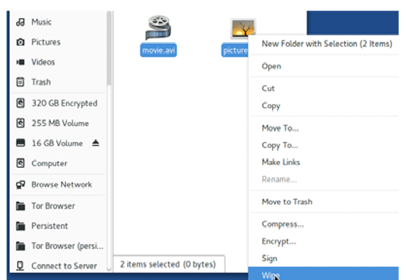
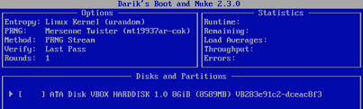
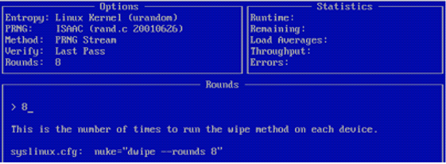
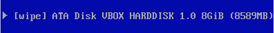

Arriverà il giorno che il nostro file criptato/decriptato non servirà piu a nulla.
Quando arriverà quel giorno non lasciate che il file venga cestinato: il file rimarà sempre li,
o quantomeno lascerà tracce della sua presenza e sarà possibile recuperarlo.
In questo capitolo ci occuperemo di tutti quei metodi per distruggere ogni prova presente nel nostro computer e in partcolare sulla memoria ROM.
Quando si è scoperto che era possibile recuperare file cancellati sul PC sono spuntati come funghi decine
di software.
Al momento possiamo suddividere i tool in tre grandi categorie:
In questa categoria rientrano quei software che utilizzano vari metodi per effettuare la sanificazione del Hard Disk.
In sostanza si occupano di liberare quei settori che contengono ancora dati fantasma e che verrano utilizzati solo quando
non ci sarà più spazio sul Hard Disk.
L'affidabilità di questi software tuttavia è messa indiscussione per le tecniche di lavoro talvolta troppo blande col
fine di vincere le "gare dei benchmark in velocita", inoltre molti di questi software lasciano tracce all'interno dei log
proprietari o del O.S stesso.
Per qusto non ci fermiamo molto sopra a questo argomento poiché farebbe saltare tutto l'anonimato.
Il file shredding è una pratica che fa fronte a questa situazione: il suo funzionamento si basa sul riscrivere nella
posizione in memoria precedentemente allocata dal file pre-esistente con byte random.
Più volte si riscriverà su quella poszione maggiori saranno le probabilità che il file scompaia per sempre.
Ci sono molti punti punti di vista sul numero di sovrascrizioni da eseguire per una corretta eliminazione esempio: la NSA ne raccomanda
3, il Dipartimento della Difesa 7 e Peter Gutmann (inventore metodo Gutmann)
nel suo schema ne dimostra 35.
Ognuno fa le sue valutazioni, certo che pero 35 sembra un numero esagerato, in realtà potrebbero bastare circa 5-6 volte.
Giusto per essere chiari Gutmann non risulta essere più valido poiché i suoi studi si
basano su vecchi pattern utilizzati negli Hard Disk IDE di fine anni '90
Consideriamo poi che dal 2001 molti produttori si sono interessati al Data Shredding tanto da standardizzare i loro
prodotti con una tecnologia chiamataATA Secure Erase.
Il File Shredding non risulta essere difficile, è possibile trovare moltisssimi tools per qualsiasi O.S. purtroppo però (a parte BleachBit) nessuno è multi-forma, quindi li suddivederemo per O.S:
Tenendo in considerazione che la nsotra si sempre la situazione di Tails procederemo al wipe di un file utilizando i tool gia presenti in esso:
Se invece ci troviamo in un'altro ambiente Linux basta installarlo col commando:
$ sudo apt-get nautlius-wipe
Nel caso si voglia shreddare un'intera partizione si può sempre usare shred, un tool dalla cara e vecchira riga
di commando.
Procediamo con l'installazione:
$ sudo apt-get install shred
Questo programma è installato nella maggior parte delle distribuzioni Ubuntu-based.
Otteniamo la lista delle nostre partizioni attive, con il seguente commando:
# fdisk -l
Cosi siamo sicuri di formattare la partizione corretta (ipotizziamo /dev/sdb).
È il momento di ripulire la partizione, se il tempo non è un nostro alleato potremmo utillizare una
cancellazione veloce. Questa procedura risulta più veloce poiché su ogni settore scrive un volre vuoto:
$ shred -vzn 0 /dev/sdb
Nel nostro caso -vzn dirà a shred:
Se invece volessimo essere più sicuri dei risultati possiamo sempre manipolare il tool affinché compia azioni
più sofisticate.
Lanciando ad esempio:
$ shred -vzn 3 /dev/sdb
Diremo al programma le stesse cose, ad eccezione che le interazioni in questo caso saranno 3 e quindi
un eliminazione della partizione più sicura.
Shred è un ottimo programma anche per l'eliminazione di singoli file, tramite il commando --remove come nel
seguenete esempio:
$ shred --remove [nomefile
DBAN (acronimo di Darik's Boot and Nuke) è un tool gratuito e
opensource che permette di effettuare file shredding su tutto l'Hard Drive.
Il suo funzionamneto non dipende da alcun sistema operativo in quanto BDAN è una distribuzione GNU/Linux.
Per usarlo basta un supporto esterno(CD,USB etc...) e una riconfigurazione del BIOS (come quando lanciamo una Live USB
di Linux).
DBAN andrebbe utillizato prima di distruggere fisicamente un drive, cosi da rendere impossibile una sua lettura.
Questo strumento offre diversi algoritmi di illegibilità del disco:
1 passaggio-Livello Sicurezza: Basso
Questo metodo non fa altro che scrivere in ogni settore un valore vuoto(0). Questo metodo va utilizato solo se lo
vuoi riutillizare.
8 passaggi-Livello Sicurezza: Medio
Il Royal Canadian Mounted Policy Technical Standard for Information Technology, Appendice OPS-II: Media Sanitazion.
Questo modulo implementa un processo di randomizzazione dati
3 passaggi-Livello Sicurezza: Medio
Il metodo veloce utillizato dal Dipartimento Americano della Difesa. Si basa sui passaggi 1,2 e 7 del modello 5220.22-M.
7 passaggi-Livello Sicurezza: Medio
Il metodo standard utilizzato dal Dipartimento Americano della Difesa.
35 passaggi-Livello Sicurezza: Alto
Il metodo descritto da Peter Gutmann nel suo documento "Secure Deletion of Data from Magnetic and Solid-State Memory".
4/8 passaggi-Livello Sicurezza: Media/Alto
Questo metodo genera nei settori numeri psedorandom. Probabilmente è il migliore nei dispositivi di ultima generazione
poiché gli schemi di generazione variano.
Questo metodo offre un livello di sicurezza medio di 4 passaggi e un livello alto con 8 passaggi.
L'uso di DBAN non richiede particolari abilità. Una volta montato in Live si presenterè in questo modo:

Troveremo una lista di dischi in uso nel nostro sistema nel nostro è un ATA Disk (virtualizzato in Virtual Machine
ma non ci interessa).
In fondo troveremo le shortcut per abilitare le funzioni:
Seguiremo sempre quest leggenda per mnumero di cicli di eliminazione. Il metodo PRNG offre un alta sicurezza con 8
passaggi, quindi definiamola nel programma:

Ora dovremmo essere pronti, torniamo nella Home del programma e clicchiamo su Spazio.
Affianco alla nostra partizione comparira [wipe] come da screen:

Ora siamo pronti a wippare la nostra memoria. Premiamo F10 e attendiamo la fine del processo di eliminazione
Se sei veramente arrivato fino qui vuol dire che il tuo interesse è avere una memoria bonificata e pronta per
i riflettori dei ricercatori forensi di tutto il mondo.Quello che devi sapere è che i metodi di File Shredding
sono efficaci per i dischi meccanici mentre potrebbero non esserlo per gli SSD.
Dico potrebbero poichè le variabili che determinano il successo o il fallimento sono diversi: nei dischi
meccaninici i file vengono eliminati alla vista ma mantengono lo spazio occupato per non rallenatre il processo di
eliminazione.Quando si creano nuovo dati,il disco riscrive i file nei settori flaggati come "eliminati".
Nelle SSD quando i file vengono eliminati sarà la stessa SSD a scegliere se riscrivere o meno il settore:
questa decisione spetta ad un controller interno questo è possibile commandare tramite un modulo chiamato
TRIM ,che si occupa di far riutillizare fin da subito i settorivuoti.
Il TRIM negli ultimi OS e abilitato di default per garantire un automatica riscrittura di tutto.
Le SSD quindi hanno una logica interna che prevedde,tramite TRIM,a riscrivere un settore fungendo da simil-shredder.
Questa considerazione ci porta ad intuire che basta 1 interazione(passaggio)di eliminazione.
Tuttavia la logica dei tool di file shredding si sposano male con l’architettura
delle SSD, quindi l’unica vera soluzione in questo senso è la pulizia totale e
completa dell’intero disco
In questa categoria rientrano tutte le tecniche che si possono effettuare per distruggere
completamente o parzialmente un dispositivo di memorizzazione fisica.
C’è da premettere che la distruzione di un disco rigido
risulta essere un’operazione estremamente faticosa.
Negli hard disk meccanici ad esempio ci vorranno diversi minuti per riuscire
ad arrivare ai supporti magnetici.
Per le unità a stato solido l’operazione risulta essere più semplice in parte,
tuttavia bisognerebbe sapereesattamente dove si tra il supporto che si occupa di memorizzare adeguatamente
le informazioni, senza possibilità di rischi.
Personalmente non mi sento di consigliare mazze, lanci del peso o qualunque
altra cosa vi venga in mente. I rischi di lanciare intatto il disco sono elevati senza
gli strumenti adeguati.
Sui dischi meccanici e SSD egrave un’operazione che in parte può essere utile per
rimuovere i componenti interni e pensare al loro smaltimento in altra sede.
ei dischi meccanici, utilizzando un martello molto resistente come quello da
fabbro e colpendo rovinosamente il disco tanto da deformarne la forma,
causeremo una reazione di smagnetizzazione.
Sui CD/DVD basta della semplice carta abrasiva, con un paio di passate lo strato
superficiale a specchio dovrebbe andarsene come cenere.
Il metodo Degausser o demagnetizzazione è il processo che consiste
letteralmente di friggere l’elettronica inviando un impulso elettromagnetico
(Emp) al dispositivo.
Il più affidabile è Garner(professionale)
se no si può creare a casa basta cercare "create a Degausser o Degausser DIY".
Prima di procedere voglio mettervi in guardia: aldilà della pericolosità di
infiammare qualunque oggetto, nel suolo nazionale è illegale in quanto i metalli
contenuti nei dischi producono fumi altamente nocivi!
Bisogna raggiungere la temperatura di 1115° C per far colare il cobalto.
Si possono utillizare:
Il solo 'affogare' un HDD nell'acqua non costituisce un danneggiamento fisico al
dispositivo.
L'acqua al massimo potrà danneggiare la scheda logica che però non è difficile da sostituire.
Negli HDD meccanici lo strato superficiale del disco magnetico è costruito da
leghe di cobalto che coprono vetro, alluminio e un substrato ceramico.
In questo caso è necessario che l'acqua entri in contatto con l'alluminio per creare un vero
danno al disco, ossidandolo.
Se quindi il disco non è alimentato e il disco non sta scrivendo è quasi impossibile
che la sola acqua danneggi l'interno
Anche in questo caso vi raccomando la massima prudenza, soprattutto se non avete idea di ciò che state facendo. Questa operazione andrebbe fatta a disco aperto, vale a dire che andrebbero tolte tutte le protezioni che coprono le memorie, o nel caso di un disco meccanico, i dischi di memoria.